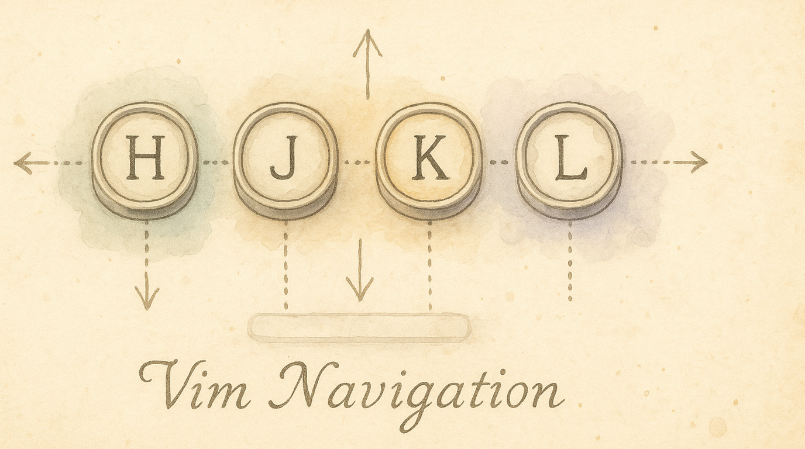
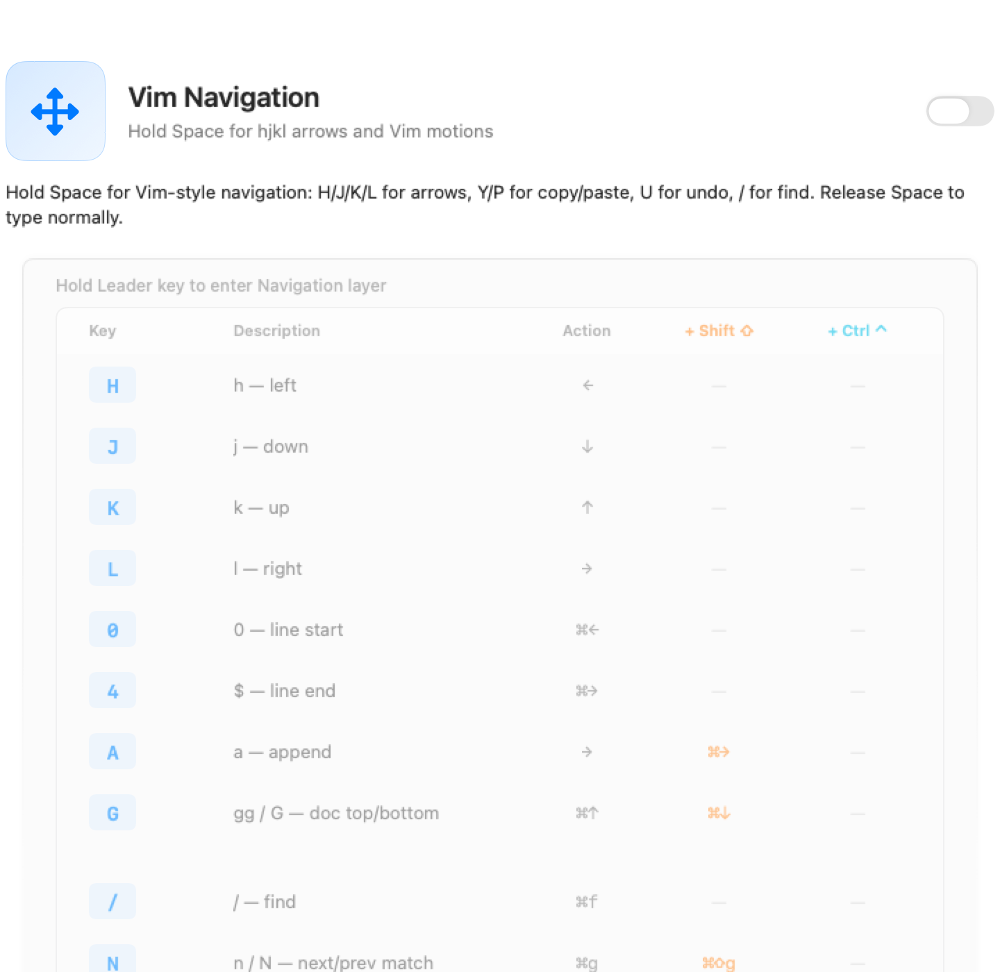

Navigate Text Like a Keyboard Ninja
Every time you move your hand to the arrow keys, you lose a second. Multiply that by hundreds of times a day and you're spending real time just… reaching. Vim Navigation puts arrows, copy/paste, undo, search, and line jumps under your fingers — without leaving the home row.
What You Get
Enable Vim Navigation and your keyboard gains a navigation layer:
- Hold Space + H/J/K/L → arrow keys (left, down, up, right)
- Hold Space + Y → copy, P → paste, U → undo
- Hold Space + / → Find (⌘F), N → next match
- Hold Space + 0 → line start, 4 → line end
- Hold Space + G → top of document (Shift+G → bottom)
- Hold Space + D → delete word, X → delete character
- Hold Space + O → open new line below (Shift+O → above)
Release Space and you're back to normal typing. Space still types a space when you tap it.
Enabling It
- Open KeyPath and click the gear icon to open the inspector panel
- Go to the Rules tab
- Find Vim Navigation in the Navigation section
- Toggle it on — it's enabled by default for new installations
Vim Navigation is the foundation that every other layer pack depends on. It defines the Leader key (Space by default) that activates all layers.

How It Works
- Tap Space → types a normal space character
- Hold Space → activates the navigation layer (the overlay shows your mappings)
- While holding Space, press a key → fires the mapped action (arrow, copy, undo, etc.)
- Release Space → back to normal typing instantly
The overlay highlights active mappings in orange when you're in the navigation layer, so you always know what's available.
The Full Mapping Table
Movement
| Key |
Action |
Vim equivalent |
| H |
← Left |
h |
| J |
↓ Down |
j |
| K |
↑ Up |
k |
| L |
→ Right |
l |
| 0 |
Line start (⌘←) |
0 |
| 4 |
Line end (⌘→) |
$ |
| G |
Top of document (⌘↑) |
gg |
| Shift+G |
Bottom of document (⌘↓) |
G |
Search
| Key |
Action |
Vim equivalent |
| / |
Find (⌘F) |
/ |
| N |
Next match (⌘G) |
n |
| Shift+N |
Previous match (⌘⇧G) |
N |
Editing
| Key |
Action |
Vim equivalent |
| Y |
Copy (⌘C) |
y (yank) |
| P |
Paste (⌘V) |
p (put) |
| U |
Undo (⌘Z) |
u |
| R |
Redo (⌘⇧Z) |
Ctrl+R |
| X |
Delete character (Del) |
x |
| D |
Delete previous word (⌥⌫) |
db |
| O |
Open line below (⌘→ Enter) |
o |
| Shift+O |
Open line above (↑ ⌘→ Enter) |
O |
| A |
Move right (append position) |
a |
| Shift+A |
End of line (⌘→) |
A |
Page Navigation (with Ctrl held)
| Key |
Action |
| D + Ctrl |
Page Down |
| U + Ctrl |
Page Up |
Tips
- Start with H/J/K/L — arrow replacement is the biggest daily win. The rest will come naturally.
- Pair with Home Row Mods — hold Space for arrows, then add ⇧ (Shift via D key) to select text while navigating. One hand navigates, the other modifies.
- Vim users: the mnemonics are intentionally familiar, but the outputs are macOS shortcuts (⌘C not yank registers). This works everywhere — TextEdit, Safari, Xcode, Slack.
- Not a Vim user? That's fine. Think of it as "Space + arrows on the home row" — the Vim names are just convenient labels.
Changing the Leader Key
Space is the default Leader key, but you can change it. See Choose Your Leader Key for alternatives (Caps Lock, Tab, Backtick).
What Depends on This
Vim Navigation defines the foundation layer. When you enable it, these packs gain access to the Leader key for their own layers:
- Windows & App Shortcuts — Leader → W → window actions
- Numpad — Leader → ; → number entry
- Symbol — Leader → S → programming symbols
- Function — Leader → F → F-keys and media
- Quick Tweaks — Delete Enhancement, Mission Control
Troubleshooting
Space feels slow or laggy
The tap/hold threshold defaults to 180ms. If Space feels delayed when typing, you can:
- Type faster (release Space within the threshold)
- Adjust the hold timing in the Leader Key pack settings
Navigation keys do nothing
- Check that Vim Navigation is toggled on in the Rules tab
- Make sure you're holding Space, not tapping it
- Verify KeyPath's service is running (green indicator in the overlay header)
I want word-by-word movement (w/b)
The base Vim Navigation pack uses macOS standard shortcuts. For word motions (⌥← and ⌥→), enable the Neovim in the Terminal collection which adds W and B keys.
Next Steps